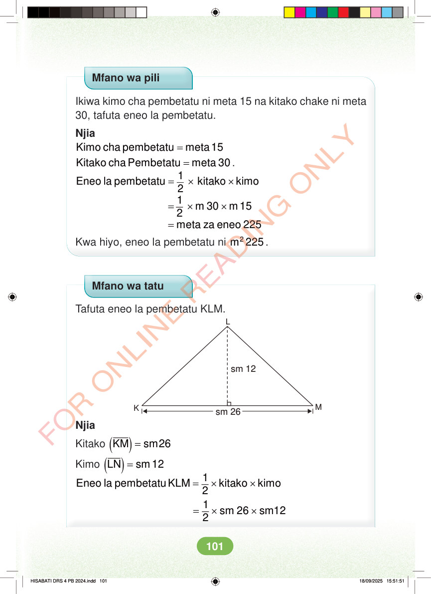

Mfano wa pili Ikiwa kimo cha pembetatu ni meta 15 na kitako chake ni meta 30, tafuta eneo la pembetatu. Njia = Kimo cha pembetatu meta 15 = Kitako cha Pembetatu meta 30 . = × × 1 Eneo la pembetatu kitako kimo 2 = × × 1 m 30 m 15 2 = meta za eneo 225 Kwa hiyo, eneo la pembetatu ni 2 m 225 . Mfano wa tatu Tafuta eneo la pembetatu KLM. L sm 12 M K sm 26 Njia Kitako ( ) = KM sm26 Kimo ( ) = LN sm 12 = × × 1 Eneo la pembetatu KLM kitako kimo 2 = × × 1 sm 26 sm12 2 HISABATI DRS 4 PB 2024.indd 101 HISABATI DRS 4 PB 2024.indd 101 18/09/2025 15:51:51 18/09/2025 15:51:51